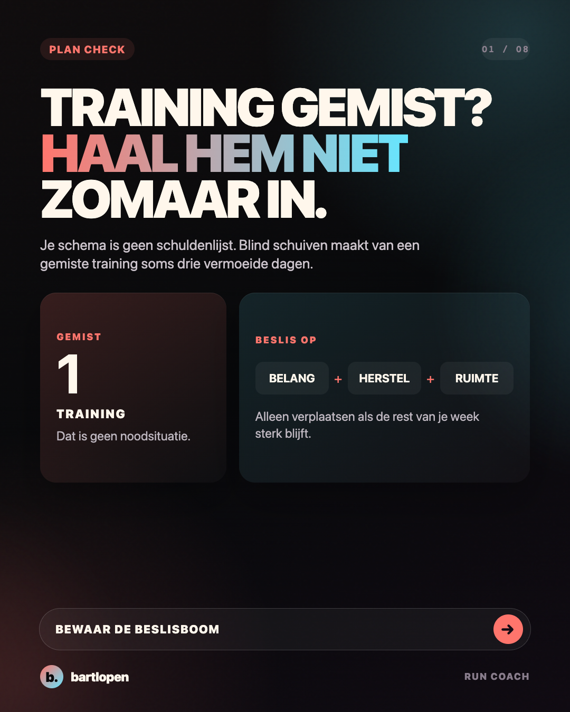
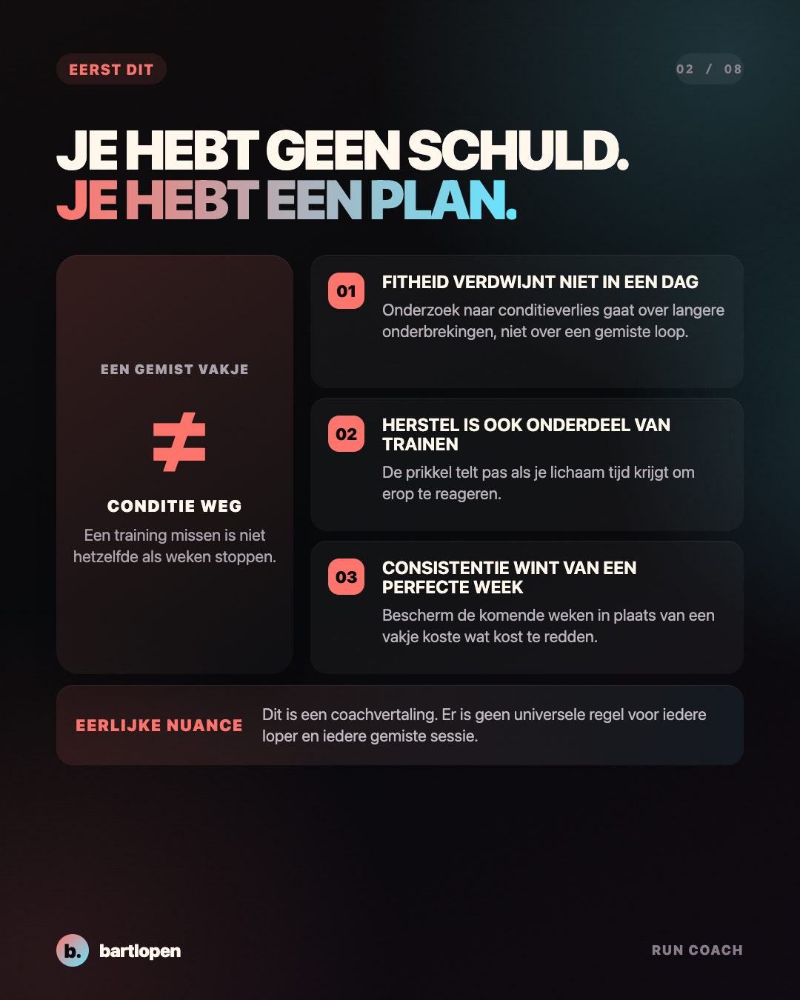
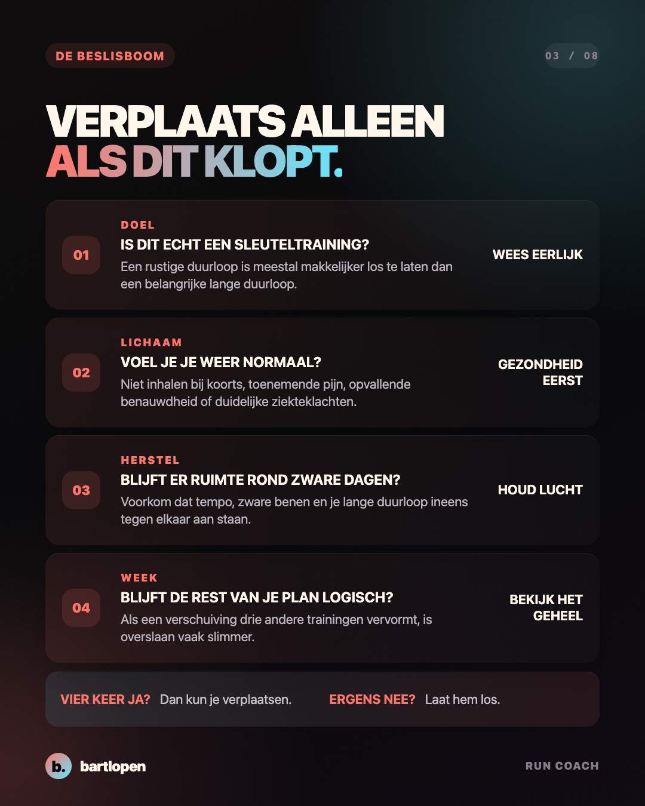
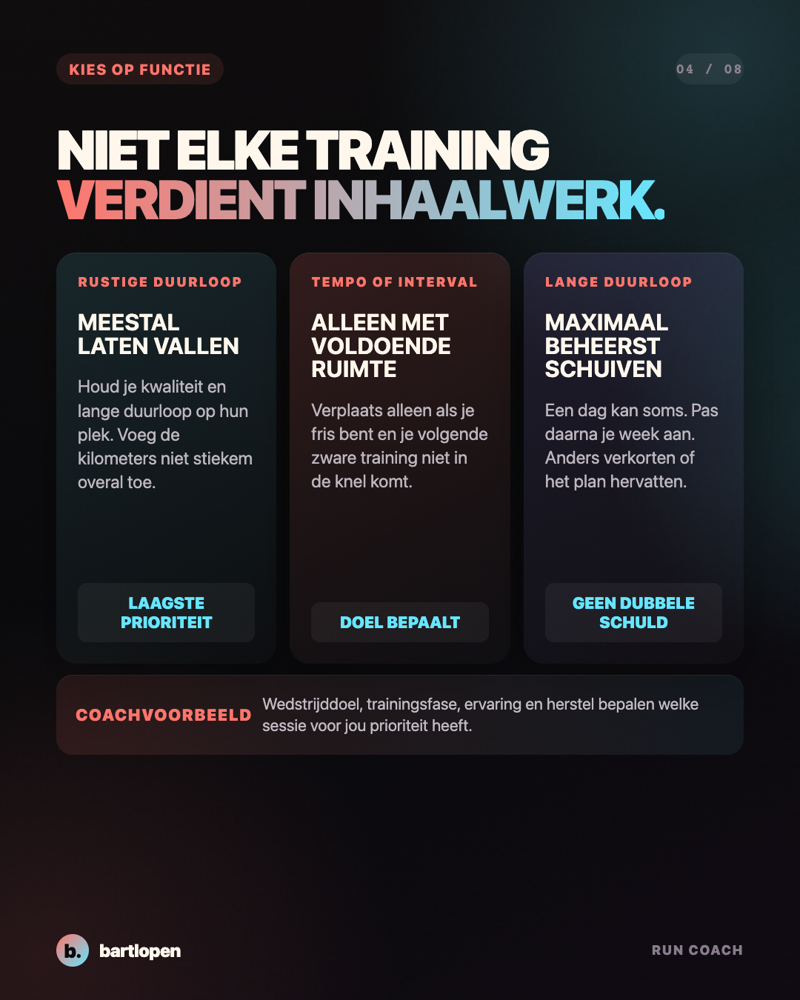
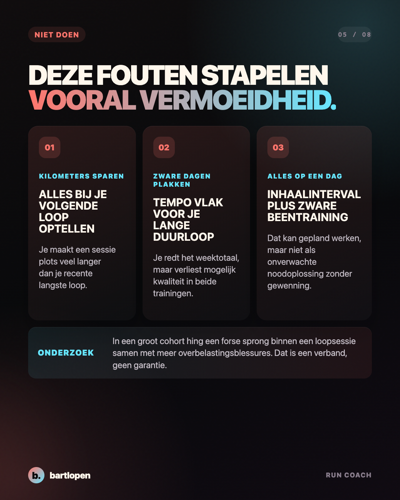
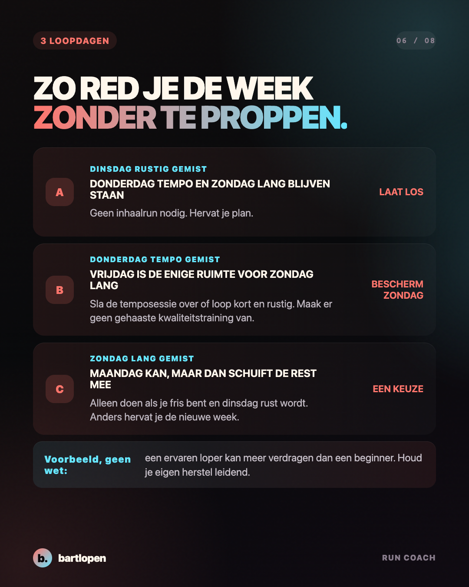
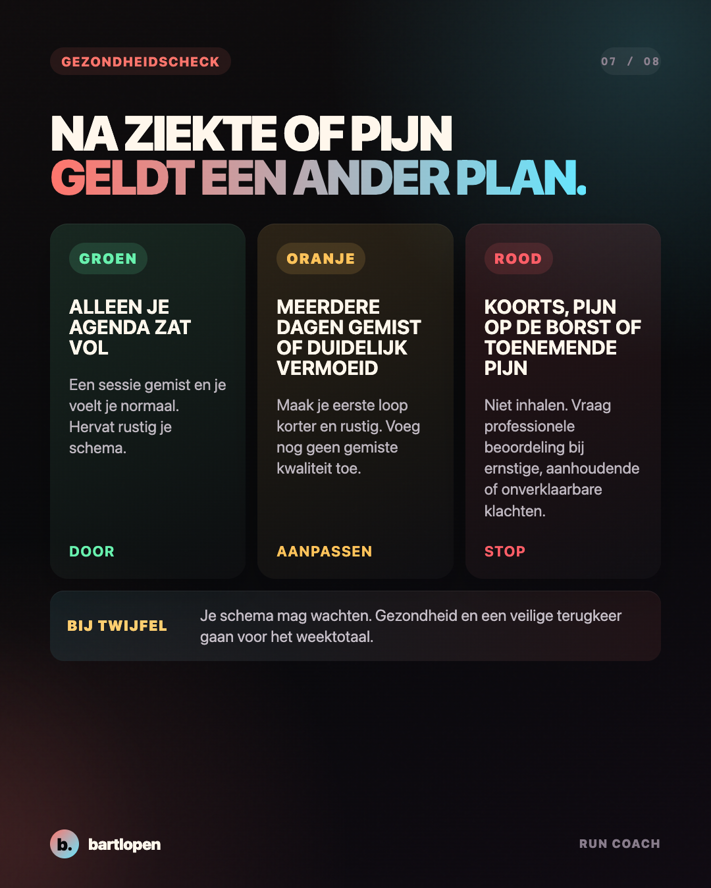
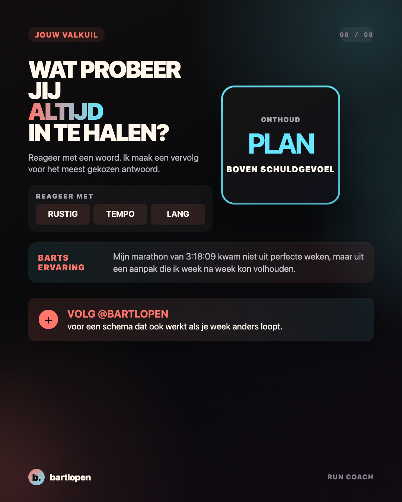

SLIDE 01 ↗Training gemist?
Niet proppen.
Acht praktische slides waarmee je beslist of je een rustige duurloop, kwaliteitstraining of lange duurloop verplaatst, aanpast of loslaat.

SLIDE 02 ↗
SLIDE 03 ↗
SLIDE 04 ↗
SLIDE 05 ↗
SLIDE 06 ↗
SLIDE 07 ↗
SLIDE 08 ↗Caption
TRAINING GEMIST? JE SCHEMA IS GEEN SCHULDENLIJST. 👀 Een gemiste loop maakt je niet ineens onfit. De problemen ontstaan vaak pas wanneer je daarna kilometers en zware trainingen gaat stapelen om je weektotaal te redden. Mijn praktische coachregel: ✅ rustige duurloop gemist? Meestal laten vallen ✅ tempo of interval gemist? Alleen verplaatsen als je herstel en lange duurloop sterk blijven ✅ lange duurloop gemist? Hooguit beheerst schuiven en daarna de rest van je week aanpassen ✅ ziekte of toenemende pijn? Niet inhalen Kijk niet alleen naar het lege vakje. Kijk naar de hele week die erna komt. Welke training probeer jij altijd in te halen: RUSTIG, TEMPO of LANG? 👇 #hardlopen #hardlooptips #hardloopschema #runningtips #marathontraining #runcoach #bartlopen
Onderbouwing: een systematische review naar korte en langere trainingsonderbreking, de cohortstudie naar afstandssprongen binnen een loopsessie, een umbrella review naar herstelstrategieën bij duursporters en ACSM-uitleg over herstel en rustdagen. De beslisboom en weekvoorbeelden zijn coachvoorbeelden, geen persoonlijk medisch of trainingsadvies.